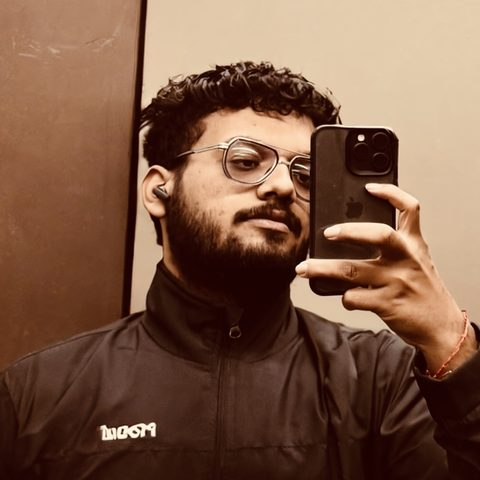

Animesh SrivastavaSenior Lead Engineer, Qualcomm
Double Gold Medalist, NIT Hamirpur
Signals into working radios.
I build RF/PHY Layer-1 firmware for Snapdragon modems, and AI agents that debug it. Each point on the map opens a part of my work.